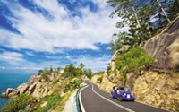
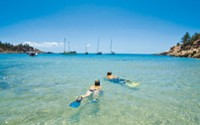
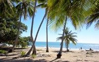
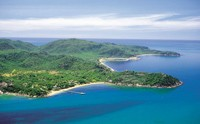
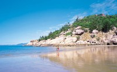
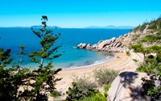
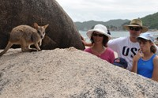
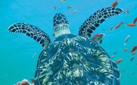

Overview



Geography



Island History and Heritage




20% OFF with QUT student card

10% OFF with GU student card

5% OFF with any types of GoCard

15%-20% OFF with Treasury membership Card

10% OFF with Flybuy Card

10% OFF with membership card